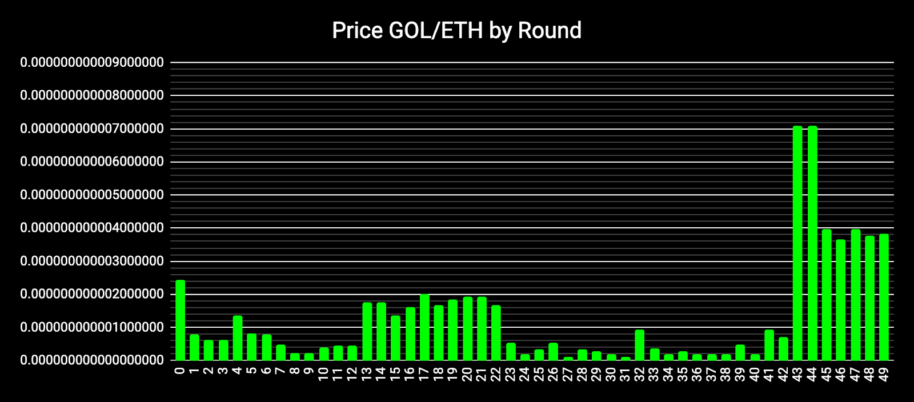
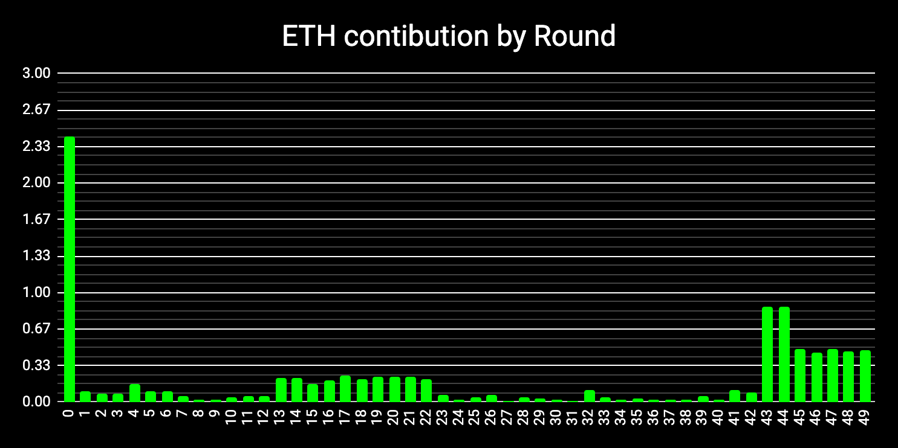
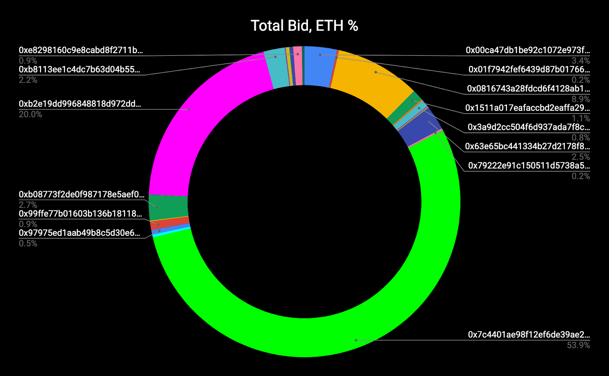
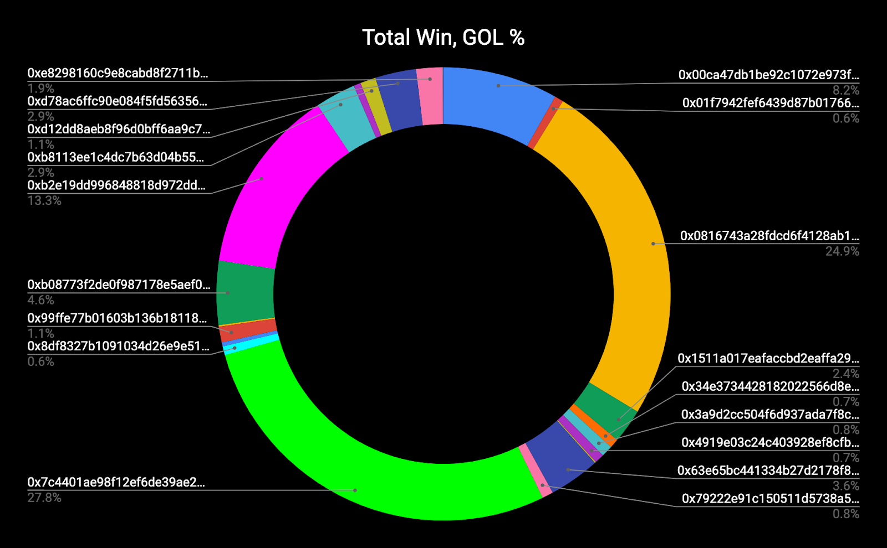
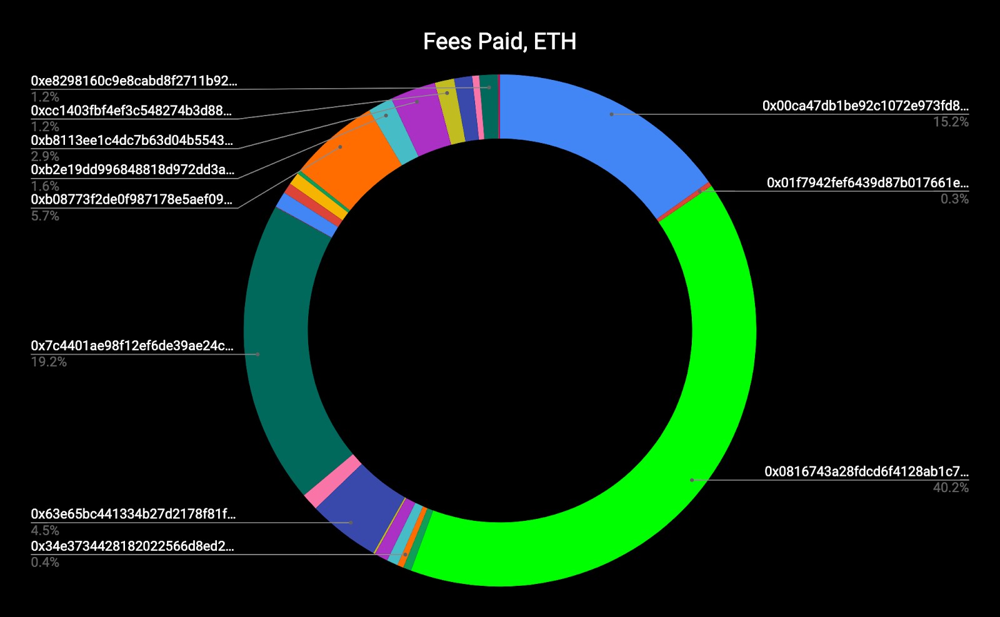
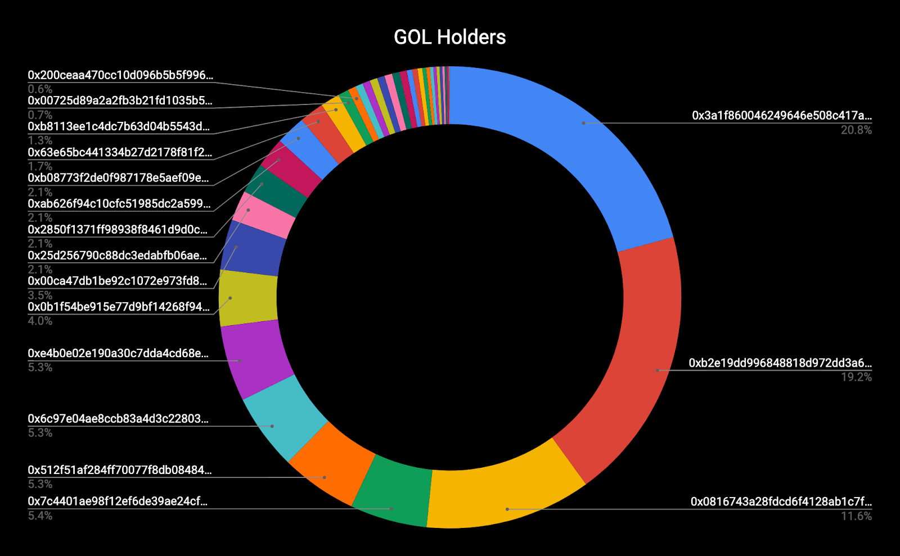

euler~Foundation, part 1
by litvintech, serejandmyself on 2020-06-30
What is it good for?
euler~Foundation is a community-powered DAO and a DeVC backing the Cyber protocol. It is the predecessor of cyber~Foundation (the mainnet DAO-DeVC). Taking into consideration that the Euler network series are an existing product and have a community of their own, it is safe to say that the euler~Foundation is here to stay.
The role of the Foundation is to bootstrap a well-governed DAO and a decentralized fund, without bingo BS, CEO’s and jurisdictions. It is managed and run by its token holders and charged with its own ETHs. We at cyber~Congress, believe that the Foundation will drive the future growth of Cyber’s ecosystem and can provide cutting-edge, decentralized instruments for its community.
In other words, think money separated from the state. Where the analogue of a decentralised state is the on-chain governance of the sovereign Cyber network with its own utility token CYB. CYB provides access to the knowledge graph, the semantics core, DeMa (decentralized marketing), staking, transacting, etc. CYB also gives access to Cybers community pool. However, the big dough (i.e., the donated ETHs) is managed by a DeVC or euler~Foundation. It is an Aragon-bred DAO. And we believe that this type of architecture will help to decentralize governance even further.
Why do you need a predecessor to cyber~Foundation?
During the series of Euler’s test networks and its latest release, Euler-6, the team behind Cyber’s launch, the cyber~Congress DAO, launched euler~Foundation. Its goal is to test community mechanisms and accumulate feedback on the future launch of the cyber~Foundation DAO.
What are the main mechanics of the euler~Foundation DAO? How is it connected to Cyber and to the current incentivized testnet, Euler-6?
euler~Foundation provided access to the test~Auction app (the app is called cyber~Auction, in order to separate meaning, during testing, we will call it test~Auction), which allows acquiring ERC-20, GOL tokens in exchange for ETH
All of the donated ETH went under the management of the euler~Foundation DAO
GOL holders were able to vest their tokens (lock them for transfer until a given time in the future) and claim a 1-to-1 amount of EULs in Cyber sovereign blockchain, with the help of the cyber~Vesting app
GOL holders (with or without vested tokens) can participate in the Foundation’s governance process and gain access to the donated ETH
The most active enthusiasts and community builders may join the cyber~Evangelism program and begin to build their communities, already bringing extra value to Cyber and its adoption
The technicalities of the working flow
cyber~Congress developed a basic work flow with which we have launched the Foundation. This process was documented in the launch ceremony for transparency and historical proof. Here is a summary of the flow:
The initial distribution of the Foundation’s tokens start with the allocation to the test~Auction (for distribution purposes): the initial donors, inventors of the protocol and the cyber~Congress DAO (this is the allocation described in Cyber’s WP)
Participants of the test~Auction acquired tokens in every (desired) round by making bids. As each round came to an end, the participants could claim the tokens they won (from that particular round) to their account or contract (on the Ethereum network)
From day 0 (of the auction) untill the end of the vesting period, any holder could lock their tokens (GOL) for transfer and claim Cyber’s testnet tokens, EULs
After the vesting period was over, the possibility to claim EUL tokens (via vesting) ceased to exist. From this moment, all of the vested tokens became transferable
Before the vesting period came to an end, the tokens of the Foundation had 2 values: governance of the DAO and claiming EULs (Cybers test network token). It is vital to remember that to gain access to the donated ETH one must be a GOL holder
All the collected ETH during the test~Auction could be transferred to the balance of the Foundation’s agent, hence making the donated funds liquid from the beginning of the auction
Please note that this flow applies to both, the test~Auction that was held and the future cyber~Auction (which will attract ETH for cyber~Foudnation).
For full information about the launch of euler~Foundation, we recommend to research this repository.
The statistics
euler~Foundation was deployed on the 10th of April, and the test~Auction started on the 14th of April. There were a total of 50 rounds
The so-called
round-zerolasted for 10 days and had 1 TGOL* allocated for distribution. Other rounds lasted for 23 hours each and had 122.4 GGOL* (0.1224 TGOL) for distributionThe total distribution was 7 TGOL and were a part of the incentivized faucet for Euler-6 and the Game of Links. Join to play now!
The test~Auction ended on the 10th of June at 11 AM GMT
*1 GGOL is Giga GOL or 1 billion GOL or 1,000,000,000 GOL
*1 TGOL is Tera GOL or 1 trillion GOL or 1,000,000,000,000 GOL
Let’s take a look at the statistics of the auction rounds:


We can see higher interest at the start of the Auction. 2 days of price discovery in the beginning and active bidding with a small hype towards the end of the Auction.
To gain more understanding of the process, let’s take a look at the bidding charts:


Bidders sorted by overall performance*
| Address | SUM of GOL | SUM of ETH | Count of Round |
|---|---|---|---|
| 0x0816743a28fdcd6f4128ab1c7fd48fabc9a47848 | 1,742,174,611,816 | 0.924 | 50 |
| 0x00ca47db1be92c1072e973fd8dc4a082f7d70214 | 572,809,848,617 | 0.351 | 31 |
| 0xd78ac6ffc90e084f5fd563563cc9fd33ee303f18 | 204,081,632,652 | 0.04 | 4 |
| 0xb08773f2de0f987178e5aef09eb0b36b8e7a81c0 | 319,430,652,724 | 0.28 | 13 |
| 0x7c4401ae98f12ef6de39ae24cf9fc51f80eba16b | 1,949,187,491,541 | 5.63 | 20 |
| 0xe8298160c9e8cabd8f2711b92529e0afe8fb01fb | 131,876,262,730 | 0.095 | 7 |
| 0x1511a017eafaccbd2eaffa2905d2f0b5843e0c57 | 171,255,104,912 | 0.12 | 3 |
| 0x63e65bc441334b27d2178f81f2d701e4e58c158a | 254,329,784,339 | 0.264 | 5 |
| 0x4919e03c24c403928ef8cfbc0c90d1f337184156 | 48,979,591,836 | 0.01 | 1 |
| 0x01f7942fef6439d87b017661e786c517e8287deb | 43,731,778,424 | 0.02 | 2 |
| 0xb8113ee1c4dc7b63d04b5543d984b5dbda25518e | 201,559,275,768 | 0.23 | 4 |
| 0xb2e19dd996848818d972dd3a60a1b7faffb82330 | 930,620,303,246 | 2.09 | 4 |
| 0xcc1403fbf4ef3c548274b3d880b5338743ce34cc | 36,014,405,762 | 0.01 | 1 |
| 0xd12dd8aeb8f96d0bff6aa9c74bdf92009741d3aa | 77,070,437,507 | 0.04 | 2 |
| 0x34e3734428182022566d8ed28a5571c89c320525 | 45,918,367,347 | 0.015 | 1 |
| 0x79222e91c150511d5738a55a31e55501e9b6c1f0 | 55,658,627,087 | 0.02 | 1 |
| 0x3a9d2cc504f6d937ada7f8c8c39bd8d047623584 | 56,496,287,788 | 0.08 | 2 |
| 0x99ffe77b01603b136b181189524d425ff1e38fb3 | 78,536,803,942 | 0.092 | 2 |
| 0x8df8327b1091034d26e9e51ee3daf441e2293e21 | 43,217,286,914 | 0.03 | 1 |
| 0x9bb77d01a9b12e04e9db99ec2dd5f564be0265a1 | 7,332,274,227 | 0.01 | 1 |
| 0x599dfeefbdf19ecb3a1d2076d594ede3a574a020 | 5,188,516,084 | 0.01 | 1 |
| 0x97975ed1aab49b8c5d30e6856ddfe20b4896490f | 20,576,131,687 | 0.05 | 1 |
| 0xfc689e70d3a351a56738a92f104a0dd051bf5f7b | 3,954,522,984 | 0.028 | 2 |
*the overall performance is calculated based on the final buying price in all of the rounds and the cumulative sum of the won amount for any given account.
Total Fees paid for bids and claims

Sum: 0.687 ETH
Uclaimed from the Auction
Uclaimed from the Auction, means that an account made their bids and won tokens but didn’t claim/transfer tokens to their personal account for some reason.
| Address | SUM of GOL |
|---|---|
| 0xfc689e70d3a351a56738a92f104a0dd051bf5f7b | 3954522984 |
| 0xe8298160c9e8cabd8f2711b92529e0afe8fb01fb | 95119739031 |
| 0xd78ac6ffc90e084f5fd563563cc9fd33ee303f18 | 204081632652 |
| 0x34e3734428182022566d8ed28a5571c89c320525 | 45918367347 |
| 0x1511a017eafaccbd2eaffa2905d2f0b5843e0c57 | 171255104912 |
| 0x01f7942fef6439d87b017661e786c517e8287deb | 21865889212 |
| 0x00ca47db1be92c1072e973fd8dc4a082f7d70214 | 45771239156 |
| Grand Total | 587966495294 |
GOL distribution

Final stats of the Auction:
There were 23 participants
159 bids were made
10.439 ETH were donated
6.413 TGOLs (of 7 TGOLs) acquired tokens and claimed
Final stats of Vesting:
11.621 TGOL were vested (of 15 TGOLs possible)
64 vestings operations were made
27 accounts or contracts vested their tokens
Governance, the final frontier
The obvious question that anyone should ask, is what comes next? The obvious answer is - Governance. To understand this better, let’s try to go over the process once again:
1) The cyber~Congress DAO deploys the Euler networks, the eluer~Foundation DAO, and the test~Auction
2) There are 4(!) tokens. 2 tokens are for the test network epochs and 2 for the mainnet
2A) GOL is an ERC-20 token and is the testing equivalent of THC. It can be acquired via auctions (the test~Auction and the future cyber~Auction) and provides access for its token holders to the donated ETH. When locked (vested) for the period of the auction, it also gives the person the ability to claim the main utility token of the Cyber sovereign network
2B) EUL is the testing equivalent of CYB, Cybers sovereign mainnet token on a Cosmos-SDK based, Tendermint-backed chain. It is the main utility token used for accessing the knowledge graph, committing cyberlinks, transacting, staking, securing the network, etc. It also provides access to on-chain governance on Cyber and to its community pool. It can be acquired either via the takeoff round or by vesting the DAO token (2A)
3) At one point, it was decided to separate Euler from Cyber networks, just like Kusama and Polka are. I.E. the Euler test networks and the euler~Foudnation DAO became a thing on their own. They exist and will NOT cease to exist in the future (unless no one wants to support them anymore). In other words, this means that GOLs and EULs are not only test network tokens. It is up to the community to decide on its monetary value from this point on. After all, GOL holders have gained access to the very real ETH donated during the test~Auction
4) This means that there are 2 separate governance processes. The first is the on-chain governance process on Cyber’s sovereign network (Euler test networks for now). EUL token holders may take advantage of the community pool, propose ideas, change parameters, etc. They may also participate in the Game of Links via governance (the governance discipline of the Game of Links has 2 TEULs allocated, and its decisions will migrate to the mainnet. In other words, these particular EULs will become CYBs)
4A) The second part of the governance is for GOL holders. As GOLs are ERC-20 tokens and euler~Foundation is an Aragon-based DAO, the governance process happens on Ethereum. This part gives the participants the possibility to govern the donated ETH
5) euler~Foundatin is the cornerstone of Cyber. It is up to it to make Cyber a thing on the blockchain market and in the search realm of the internet via collective decisions without any CEOs and\or jurisdictions (please note that no legal foundations backing either, Euler and\or Cyber Foundation exist. There are also non of this BS in the network itself, everything is managed by the users, DAOs, economics, and code)
6) Another part of the euler~Foundation is its ability to have apps. Like the evangelist app (Cybers ambassador program). This lets you use web3 mechanics, apply for the ambassador program, and earn rewards from the Foundation
Call to action
In essence, all of this means that right now, GOL token holders are in charge of the donated ETH to the euler~Foundation. It is now up to them to kick off the decision process of what to do with the modest donated sum. Should it be invested to gain more ETH? Should it be spent on security? Should it be given away to community members that have blue eyes? And so on.
We call upon GOL holders to use Aragon’s UI, make proposals, think of ideas and to start making search great again!
Come and explorer euler~Foundation on Aragon here: https://mainnet.aragon.org/#/eulerfoundation/
Connect your ETH account, which has GOL tokens, and use the UI to create proposals and vote on them. Check out the finance and the tokens tabs. Explore the surroundings. Be active! There is no legal entity here, but only the agent of the DAO, its balances, and the token holders. It is now you who is in charge. Let’s make decentralization decentralized!